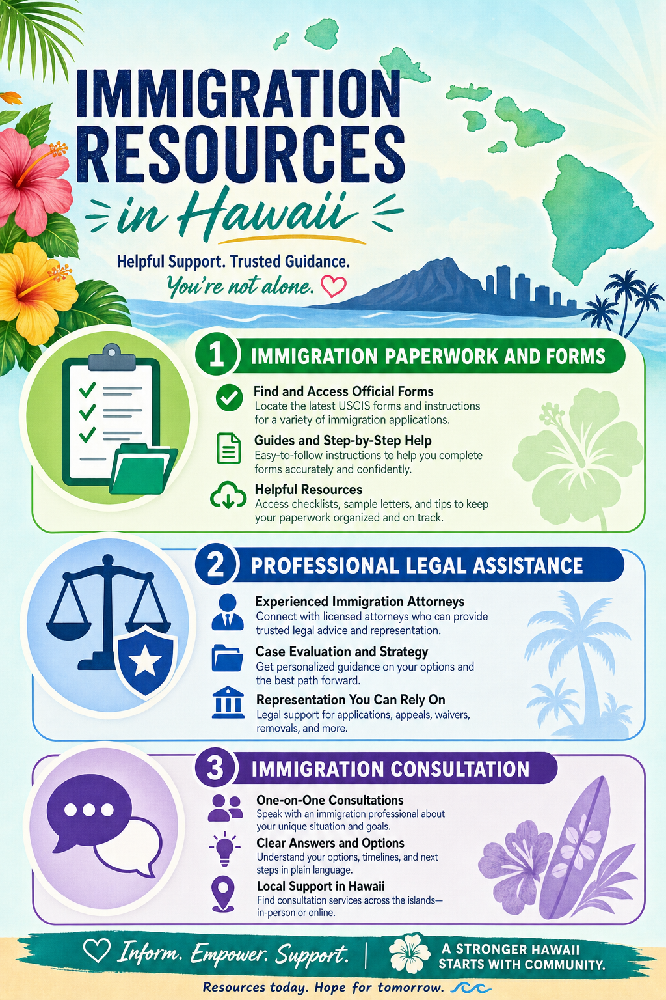

Hawaii is one of the most diverse states in the United States, with significant communities from the Philippines, Japan, Korea, Micronesia, Samoa, and many other Pacific nations and Asian countries. Navigating U.S. immigration law is complex, but there are significant resources available in Hawaii to help. This is a general overview — immigration law is highly fact-specific, and you should consult with an immigration attorney for guidance on your particular situation.
Hawaii's Unique Immigration Context
Hawaii's geographic position in the central Pacific gives it a unique relationship with immigration, particularly from Pacific Island nations. Citizens of the Federated States of Micronesia, the Republic of the Marshall Islands, and Palau have special rights to live and work in the United States under the Compact of Free Association (COFA). Hawaii has the largest COFA migrant population in the United States, and these communities have specific needs and legal rights that differ from other immigrant groups.
Family-Based Immigration
The most common pathway to permanent residence (a "green card") in the United States is family sponsorship. U.S. citizens can petition for spouses, children, parents, and siblings. Permanent residents (green card holders) can petition for spouses and unmarried children. Processing times vary significantly by relationship category and country of birth — some family preference categories have backlogs of many years for nationals of certain countries.
Legal Aid Resources in Hawaii
Several organizations provide immigration legal services in Hawaii. Catholic Charities Hawaii's Immigration Services program provides low-cost consultations and assistance with DACA renewals, citizenship applications, and certain other immigration matters. Legal Aid Society of Hawaii offers immigration assistance to qualifying low-income individuals. The Hawaii Immigrant Justice Center connects immigrants with pro bono legal representation. The Hawaii State Bar Association's lawyer referral service can connect you with private immigration attorneys.
DACA in Hawaii
DACA (Deferred Action for Childhood Arrivals) has thousands of recipients in Hawaii. The program's legal status has been subject to ongoing litigation, making it essential for DACA recipients to stay current on developments and maintain proper renewal filing. Our office handles DACA renewals and can advise on transition pathways for recipients who may now qualify for other immigration benefits through marriage, employment, or other means.